This is tutorial page for Aes Publica project
Aes Publica is help utility for eveonline game.
It has two module:
-
Ore Calc - its main purpose is to calculate amounts and kinds of ores needed for building given set of items.
So, here you can found an answer for the question "How much veldspar I need to build one Avatar and 100500 Drakes"
This is achieved with help of simplex method. God bless those mathematicians who invented this stuff.
-
Fits on Market - checks availability of given sets of items on given citadel/stations markets.
Helps to check if it's possible to fit 100500 Drakes in given citadel.
Useful for alliance market suppliers for fast checking before CTA
All sources for this project can be found on https://github.com/sergey-koumirov/AesPublica
Let's begin with the beginning.
Registration & Login
Nothing unusual here.
Please register and login
Ore Calc
There is 5 areas on main page (from left to right, from top to bottom):
- refinery settings
- minerals info
- build list
- storage list
- ores result & settings

-
Change refinery settings according to your situation. Don't forget choose at least one rig. You can add your actual characters, but usually All V is enought.

-
Next thing you need to do is to add items to build. Use textarea or search field right under the text "Build list" and don't forget to click on blue mark for saving changes.

-
If you already have some ore, minerals or spare parts you can add them to storage. Ores will be refined to minerals and all items from storage will be subtracted from needed materials during calculation.

-
Next things to do is to choose ores which will be allowed in result. Don't forget save settings (click blue checkmark in the left top corner)

-
After all this preparations you click blue gear and should see smth like this. Click
 to copy result to clipboard.
to copy result to clipboard.

-
Next look at minerals area. There is four columns
- All: minerals need to build items from build list (storage is ignored)
- After: minerals which will be received after reprocessing result ores
- Need: minerals needed to build items from build list taking into account items from storage
- Odd: After - Need

Fits on Market
- Go to "Characters" and authorize characters who have dock rights on citadel/stations with checked market (click 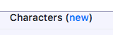)
-
Add new "Fit Scan"
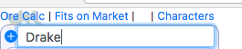.
-
You will see
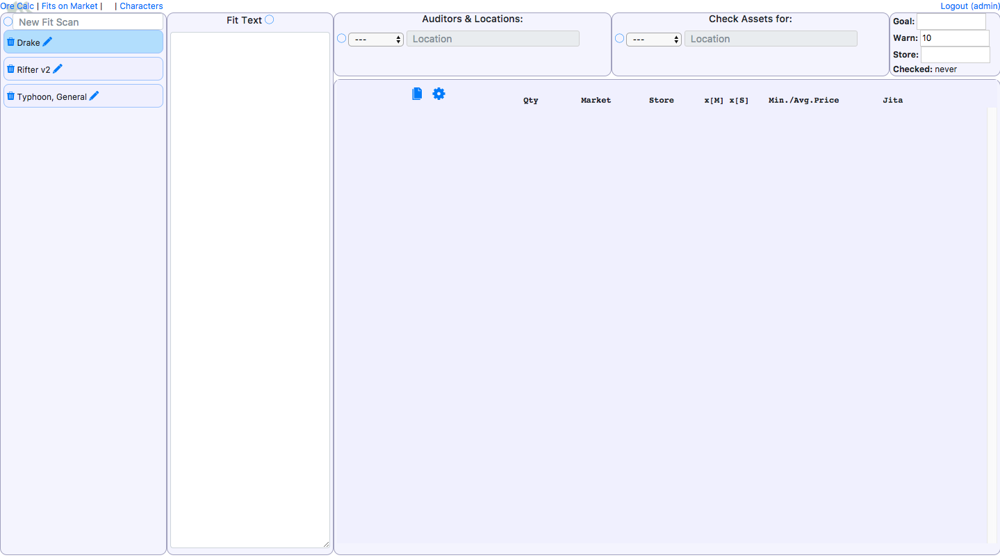.
-
Copy & Paste fit text to "Fit Text" field
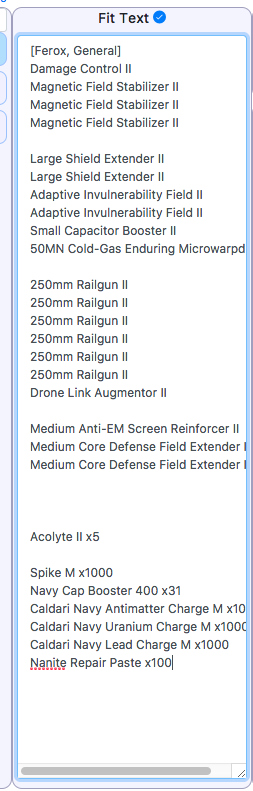.
-
Click blue checkmark, fit will be parsed and you should see
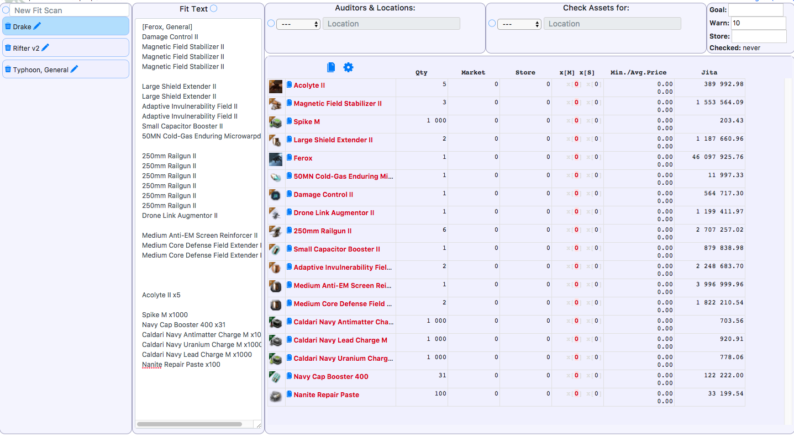.
Parsed items are shown in table:
Qty - the total number of item in fit
Market - the total number of item on market(s)
Store - the total number of item in your store(s)
x[M] x[S] - floor(Market/Qty), floor(Store/Qty)
Min./Avg.Price - minimum price on market, average price for first Qty*Goal items on market ordered by price
Jita - Jita sell price (evemarketer.com)
-
Add character(s) who will check orders on market and station/citadel where those orders should be checked.
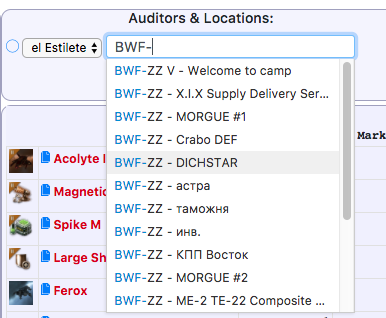
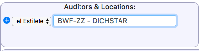
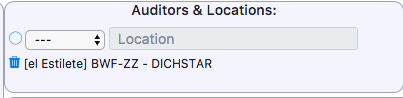
Autocomplete list may wait for a while before appearing. It takes time to receive citadel names.
-
(Optional) Add character(s) who posses your items stocks in "Check Assets for:" area
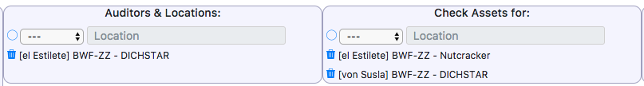.
-
Set warning values
Goal:
if floor(Market/Qty) >= Goal there is no warnings
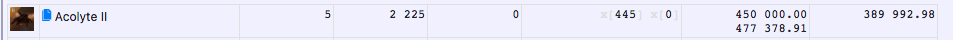
Warn:
if Warn <= floor(Market/Qty) and floor(Market/Qty) < Goal
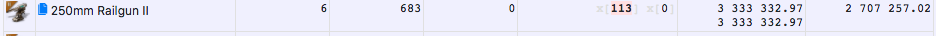
if floor(Market/Qty) < Warn
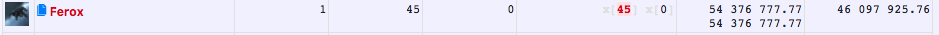
Store:
if floor(Store(from table)/Qty) < Store

-
Click gear icon 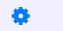 and wait for a while. Market and your assets will be checked using esi api and shown in table.
-
Result:
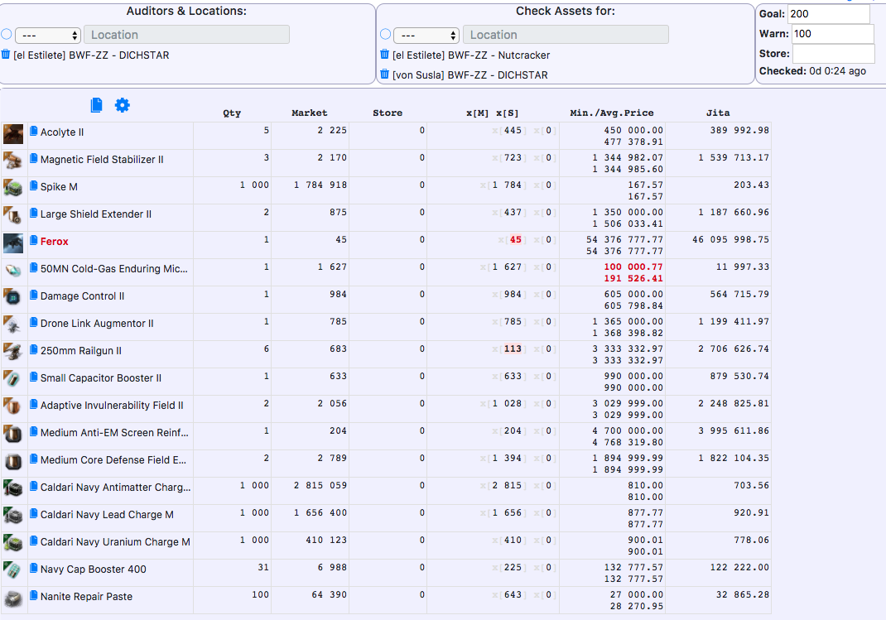
* click  to copy list of needed items
to copy list of needed items
Ferox, 155
250mm Railgun II, 517
( Ferox, 155 = Goal * Qty - Market = 200 * 1 - 45)
( 250mm Railgun II, 517 = Goal * Qty - Market = 200 * 6 - 683)
* Red prices mean more than 150% of Jita sell
Feedback
If you've found some bugs or have questions - please create issue on github